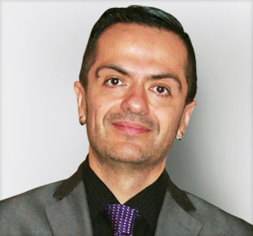

Beto is a contributing author to the second edition of the DNA of Success and he specializes in Jack’s “Success Attitude Formula”. He focuses on how to use your biological control center (heart/brain) along with epigenetics and the “Master State” to achieve the highest possible outcomes. Beto also brings a unique perspective with his deep research and practice into human energy and how to apply it.
As a successful multiple business owner, software architect, sales management expert, performance trainer and energy medicine practitioner Beto intimately knows the formula for life success. He has mentored hundreds of sales professionals holding training and workshops all over the United States. He has been on the same stage as Google, HP and IBM in IT conferences across the nation.
He has developed enterprise platform technologies that display data from medical devices revealing the overall health of the human nervous and vascular systems. His technology is used by physicians and diagnostic centers all over the country providing early detection of life threatening chronic disease. He also spearheaded the development of the first international marketplace for medical equipment and supplies. Through a Joint Venture with Globus Relief his platform reaches 73% of the population in 144 countries supplying life saving technologies to hospitals and medical systems world wide.
On top of technology development in the health care and medical industry Beto has a passion for holistic healing and human dynamics. Here in 2020 he has incorporated this into the overall high performance strategies taught through the DNA of Success programs. This all began early in 1994 through his formal training in energy healing and body work.
Many of the techniques that Beto brings to the DNA of Success programs began early with his experience with energy medicine. He graduated with honors from UCMT out of Salt Lake City, UT. They were the second top school in the world that he attended for energy healing and body work.
As an entrepreneur in technology, human potential and energy medicine Beto Paredes spends a good majority of his time studying. Even so to have read over 1,000 books and hundreds of other research papers and studies. He spends at least an hour and sometimes more every day reading and keeping up to date on all of the subjects of interest he can.
Beto has also appeared several times as a guest speaker at conferences in the Automotive, MLM, Affiliate Marketing, Sales Management and Software Engineering space. These include several National IT Summits, Affiliate Convention, several state IADA’s and the Ad-Tech OfferVault Leadership Conference held at Ad-Tech.